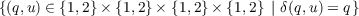
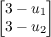
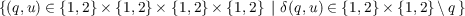

Example 5.8 (Implementation of a FSM)

Transitions of the state of a FSM are triggered by changes of its input v. The system can be modeled as a cascade of two systems, in which an external signal drives the FSM. A finite state machine (FSM) or deterministic finite automaton (DFA) is a system with inputs, states, and outputs taking values from discrete sets that are updated at discrete transitions (or jumps) triggered by its inputs. Then, given a FSM and an initial state q0 ∈ Q, a transition to a state q1 = δ(q0,v) is performed when an input v ∈ Σ is applied to it. After the transition, the output of the FSM is updated to κ(q1). This mechanism can be captured by the difference equation
This model captures the dynamics the model of the cyber components in the instructions document withThe above model can be summarized as follows:
| f(q,u) | := , | (2) |
| C := | , | (3) |
| g(q,u) | := δ(q,u) = , | (4) |
| D := | , | (5) |
| y | := h(q) = q | (6) |
For the hybrid system FSM in Figure 1 we have the following Matlab embedded functions that describe the sets C and D and functions f and g. Figure 2 depicts the corresponding inputs and state of the FSM.
Flow map
1 function xdot = f(x, u)
2 %--------------------------------------------------------------------------
3 % Matlab M-file Project: HyEQ Toolbox @ Hybrid Systems Laboratory (HSL),
4 % https://hybrid.soe.ucsc.edu/software
5 % http://hybridsimulator.wordpress.com/
6 %--------------------------------------------------------------------------
7 % Project: Simulation of a hybrid system Finite state machine (FSM)
8 % Description: Flow map
9 %--------------------------------------------------------------------------
10 %--------------------------------------------------------------------------
11 % See also HYEQSOLVER, PLOTARC, PLOTARC3, PLOTFLOWS, PLOTHARC,
12 % PLOTHARCCOLOR, PLOTHARCCOLOR3D, PLOTHYBRIDARC, PLOTJUMPS.
13 % Copyright @ Hybrid Systems Laboratory (HSL),
14 % Revision: 0.0.0.3 Date: 05/20/2015 3:42:00
15 %--------------------------------------------------------------------------
16 % flow map: xdot=f(x,u);
17
18 n = length(x); % size of the q state
19 qdot = zeros(n,1); % dynamics of the q state
20 xdot = [qdot];
Flow set
1 function v = C(x, u)
2 %--------------------------------------------------------------------------
3 % Matlab M-file Project: HyEQ Toolbox @ Hybrid Systems Laboratory (HSL),
4 % https://hybrid.soe.ucsc.edu/software
5 % http://hybridsimulator.wordpress.com/
6 %--------------------------------------------------------------------------
7 % Project: Simulation of a hybrid system Finite state machine (FSM)
8 % Description: Flow set
9 %--------------------------------------------------------------------------
10 %--------------------------------------------------------------------------
11 % See also HYEQSOLVER, PLOTARC, PLOTARC3, PLOTFLOWS, PLOTHARC,
12 % PLOTHARCCOLOR, PLOTHARCCOLOR3D, PLOTHYBRIDARC, PLOTJUMPS.
13 % Copyright @ Hybrid Systems Laboratory (HSL),
14 % Revision: 0.0.0.3 Date: 05/20/2015 3:42:00
15 %
16 % Check on flow conditions
17 % E.g.,
18 % if (x(1) >= u(1)) % flow condition
19 % v = 1; % report flow
20 % else
21 % v = 0; % do not report flow
22 % end
23
24 xtemp = zeros(2,1);
25 xtemp = x;
26 x = xtemp;
27
28 % n = length(x); % size of the q state
29 qplus = zeros(2,1); % dynamics of the q state
30 % e.g.,
31 qplus(1) = 3-u(1);
32 qplus(2) = 3-u(2);
33 if x(1)==qplus(1) && x(2)==qplus(2)
34 v = 1; % report flow
35 else
36 v = 0; % do not report flow
37 end
38
Jump map
1 function xplus = g(x, u)
2 %--------------------------------------------------------------------------
3 % Matlab M-file Project: HyEQ Toolbox @ Hybrid Systems Laboratory (HSL),
4 % https://hybrid.soe.ucsc.edu/software
5 % http://hybridsimulator.wordpress.com/
6 %--------------------------------------------------------------------------
7 % Project: Simulation of a hybrid system Finite state machine (FSM)
8 % Description: Jump map
9 %--------------------------------------------------------------------------
10 %--------------------------------------------------------------------------
11 % See also HYEQSOLVER, PLOTARC, PLOTARC3, PLOTFLOWS, PLOTHARC,
12 % PLOTHARCCOLOR, PLOTHARCCOLOR3D, PLOTHYBRIDARC, PLOTJUMPS.
13 % Copyright @ Hybrid Systems Laboratory (HSL),
14 % Revision: 0.0.0.3 Date: 05/20/2015 3:42:00
15 %--------------------------------------------------------------------------
16 % jump map: xplus = g(x,u);
17
18 % n = length(x); % size of the q state
19 qplus = zeros(2,1); % dynamics of the q state
20 % e.g.,
21 qplus(1) = 3-u(1);
22 qplus(2) = 3-u(2);
23
24 xplus = [qplus];
25
Jump set
1 function v = D(x, u)
2 %--------------------------------------------------------------------------
3 % Matlab M-file Project: HyEQ Toolbox @ Hybrid Systems Laboratory (HSL),
4 % https://hybrid.soe.ucsc.edu/software
5 % http://hybridsimulator.wordpress.com/
6 %--------------------------------------------------------------------------
7 % Project: Simulation of a hybrid system Finite state machine (FSM)
8 % Description: Jump set
9 %--------------------------------------------------------------------------
10 %--------------------------------------------------------------------------
11 % See also HYEQSOLVER, PLOTARC, PLOTARC3, PLOTFLOWS, PLOTHARC,
12 % PLOTHARCCOLOR, PLOTHARCCOLOR3D, PLOTHYBRIDARC, PLOTJUMPS.
13 % Copyright @ Hybrid Systems Laboratory (HSL),
14 % Revision: 0.0.0.3 Date: 05/20/2015 3:42:00
15 %
16 % Check on jump conditions
17 % % E.g.,
18 % if (x(1) <= u(1)) && (x(2) <= 0) % jump condition
19 % v = 1; % report jump
20 % else
21 % v = 0; % do not report jump
22 % end
23 xtemp = zeros(2,1);
24 xtemp = x;
25 x = xtemp;
26
27 % n = length(x); % size of the q state
28 qplus = zeros(2,1); % dynamics of the q state
29 % e.g.,
30 qplus(1) = 3-u(1);
31 qplus(2) = 3-u(2);
32 if x(1)==qplus(1) && x(2)==qplus(2)
33 v = 0; % do not report jump
34 else
35 v = 1; % report jump
36 end
_